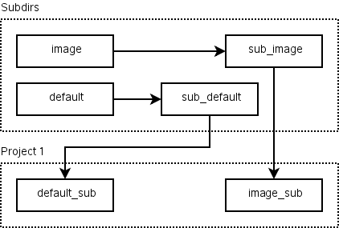
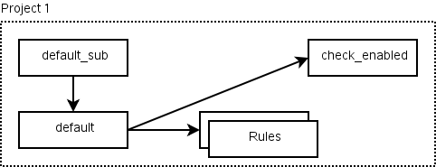
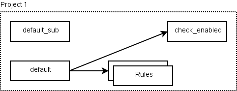
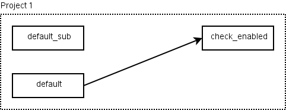
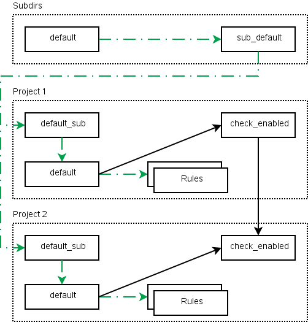
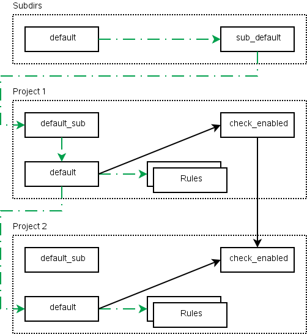
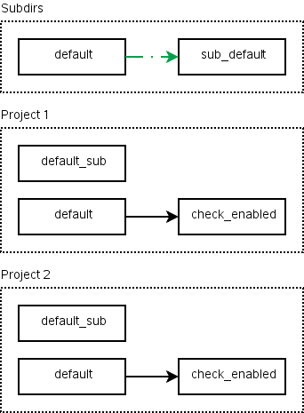
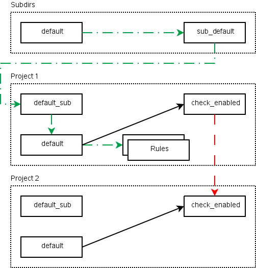

|
Home · Overviews · Reference · Classes | |
There are 2 types of disabled projects and the logic surrounding them can be confusing. This document attempts to make this clear by showing how the rules in related projects are connected.
To accomodate subdirectories there are 2 derived rule names. There is sub_<rule>, which is used in a project and connects to the <rule>_sub rule in every subdirectory project. All of these are handled in the same way but for clarity this document will focus on the default rule.
This image shows how the project's default rule is connected to the sub_default rule which is connected to the default_sub rule in Project 2. The image also demonstrates how the image rule uses the same logic.

Eabled projects can be built directly and via subdirs.

In this case, it does not matter if the project is built manually or via subdirs because the default_sub rule is connected to the default rule.
This project also demonstrates the check_enabled rule, which comes into play when a dependency exists.
A project can be soft-disabled. That is, it does not build automatically but can still be built manually. The most common way to become soft-disabled is to have no entry in the PROJECTS variable.

As can be seen, this is virtually the same as an enabled project. The difference is that the default_sub rule does not cause the project to be built. By default it does nothing at all but if you pass -disabled it will print a message explaining why the project has been disabled. The check_enabled rule will also print a message explaining that the project is normally disabled so that if you build it manally or via dependency you will still be able to see that this is not an explicitly requested project.
A disabled project cannot be built. A project that depends on a disabled project will also be disabled.

As with a soft-disabled project, the default_sub rule does not cause an error. However the default and check_enabled rules both cause an error.
The check_enabled rule ensures that the project has not been disabled.

The green, dashed lines show how the projects' rules are caused to run.
Not shown here are the dependencies between the rules in the two projects. These dependencies are created by the build system to ensure that jobs are performed in the correct order (eg. you need to link a library before you can link an application to it).

The subdirs project does not see project 2 but because project 1 depends on it, the build system has added a dependency so that it can be built.

Project 1 was disabled for depending on project 2. However it's not clear from this image how that came to be so the following image is also useful. It shows the state when the build system discovers the disabled project.

As with a soft-disabled project, the subdirs project does not see project 2. Project 1 depends on project 2 but the check_enabled rule will cause an error. This is why the first project is also disabled.
See also Overviews.
| Copyright © 2009 Trolltech | Qt Extended - QBuild Maintainer Guide |